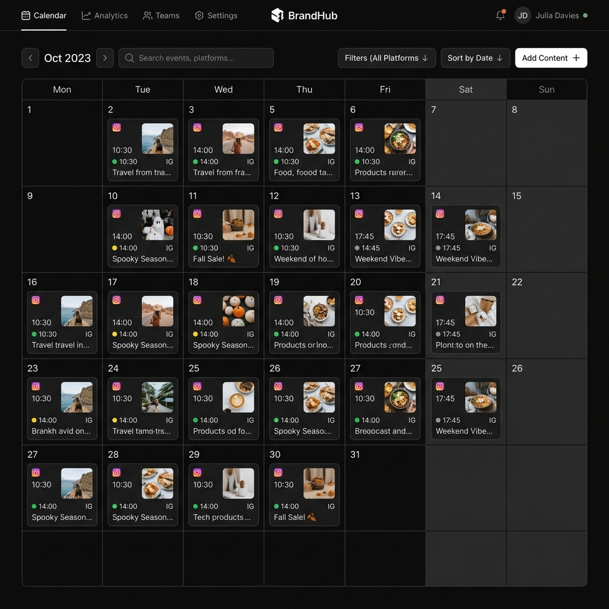

BK Flow
SaaS B2B colossal focado em agências de marketing. Gestão de métricas, orquestração de publicações e calendário editorial com autopublicação no Instagram via Meta Graph API.
Contexto & Problema
Equipes de marketing digital lidam com ferramentas fragmentadas para criação, aprovação e agendamento de conteúdo. O processo manual de redigir legendas, enviá-las para revisão em planilhas e, após aprovação, agendá-las em outra plataforma resulta em perda de produtividade e quebra de fluxo.
Arquitetura & Stack
- Frontend: React 18, Vite, TypeScript. Estado global com Zustand, estado assíncrono rigorosamente gerido via React Query.
- UI System: Tailwind CSS + Shadcn/UI para design system focado em consistência visual.
- Backend: Supabase como API e banco relacional (PostgreSQL). Utilização extensiva de RLS para isolamento multi-tenant.
- Automação: Edge Functions (Deno) para orquestrar publicações agendadas e integração com Meta Graph API.
Decisões Técnicas
Mudanças de data via drag-and-drop no calendário editorial exigiam mutações otimistas (Optimistic Updates) para garantir que a UI fosse instantânea, mesmo antes da persistência no Supabase. React Query solucionou conflitos de estado e cache.
A modelagem multi-tenant foi desenhada para separar dados de cada agência nativamente através do PostgreSQL RLS, garantindo que usuários comuns nunca acessem relatórios de times aos quais não pertencem, eliminando vulnerabilidades na camada de aplicação.


Resultado
O BK Flow se consolidou como uma infraestrutura robusta, demonstrando como a união de modelagem relacional sólida com as práticas mais modernas do ecossistema React (React Query + Zustand + Shadcn — a "Santíssima Trindade" do Frontend) pode gerar uma experiência de classe mundial para o usuário final.